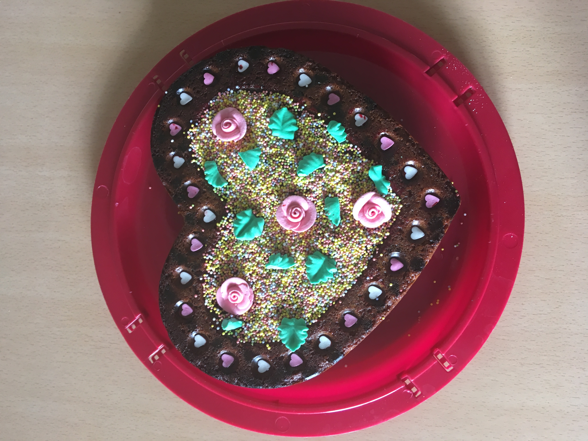
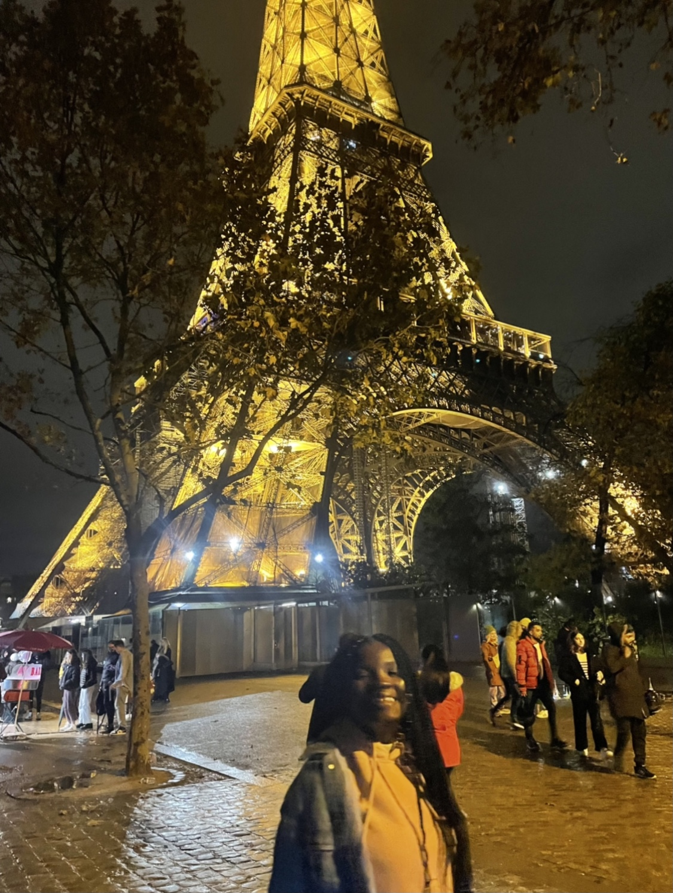
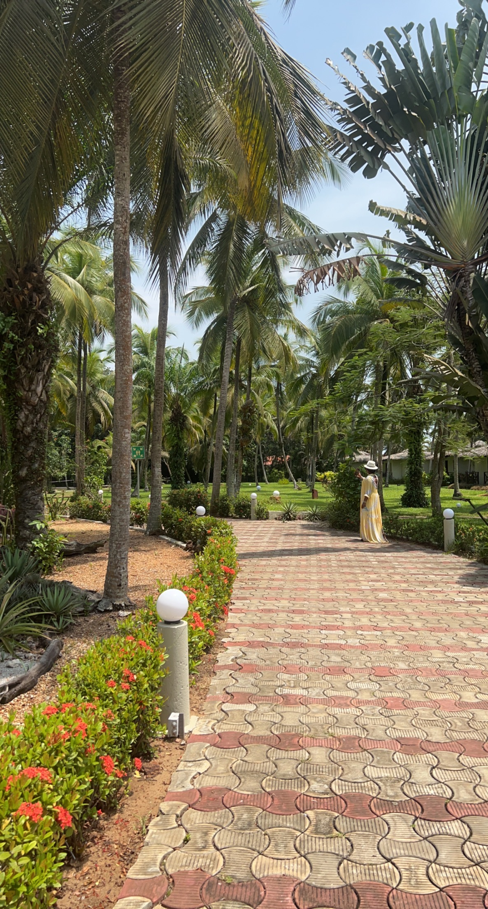

Hi!!! My name is Soukeyna Coulibaly, (Souky to my friends 😉). I was born in Ivory Coast 🇨🇮, but I grew up in Nigeria 🇳🇬, Madagascar 🇲🇬, France 🇫🇷 and Niger 🇳🇪. I had an international experience from a young age, after leaving my country at 4 years old. It helped me to become curious, open minded and constantly looking for new experiences. I currently live in Cergy, where I am studying a Bachelor's degree in Business Administration at ESSEC Business School.
I am currently a member of an association at ESSEC called ESSEC AFRICA SOCIETY which is an international association 🌍 created to promote African culture and job opportunities among the ESSEC student community. My role, as a member of the events department, is mainly to organize events to promote African culture at ESSEC.
Besides that, I love cooking 👩🏿🍳 because it allows me to discover new cultures by making recipes from all over the world. My favorite part of cooking is baking 🍰 because it allows me to pass the time and take gourmet breaks.
During my life I had the chance to live in 5 countries and also to travel in about 20 countries. I like to travel because it allows me to discover new cultures, to meet new people or to learn a new language.
Paris, FRANCE
Assinie-Mafia, IVORY COAST